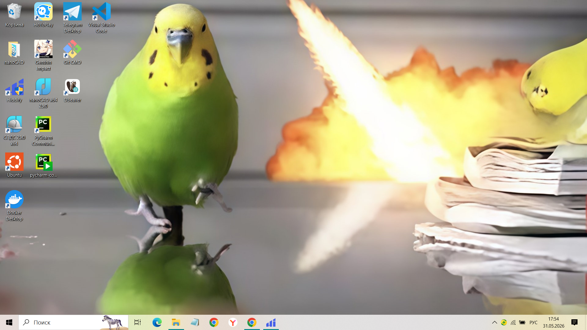

Формат: JPG — идеально подходит для фотографий. JPG хорошо сжимает фото, сохраняя при этом приемлемое качество. Размер файла получается небольшим, что важно для быстрой загрузки сайта.

Формат: PNG — лучший выбор для скриншотов. PNG сохраняет чёткость текста и мелких деталей, поддерживает прозрачность. Подходит для интерфейсов, схем и изображений с текстом.
Формат: SVG — используется для логотипов и иконок. Это векторный формат, который не теряет качество при масштабировании. Файл весит очень мало, а картинка остаётся чёткой на любом экране.

Формат: GIF — подходит для простых анимаций. Поддерживает движение и прозрачность, но имеет ограниченную цветовую палитру (только 256 цветов). Используется для коротких анимированных изображений.